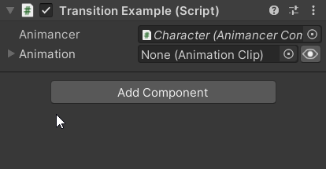

|
Animancer is a Unity plugin which allows you to play animations on demand and control their details directly, without all the restrictions and extra preparation required by other systems. You can try out all the Features for FREE with Animancer Lite. |
|
Avoid Animator Controllers  Start with the basics  |
Quick PlayJust get an  |
Easy WaitingRegister an End Event to receive a callback when an animation finishes. Or |
|
Smooth TransitionsBlend between animations over time to ensure that your characters continue to move smoothly when changing between animations. The Custom Fade system allows you to replace the default linear interpolation with a custom fade curve and you can even transition from an animation into the start of that same animation consecutively using |
Flexible StructureOrganise your animations using arrays, This allows you to define common structures like    |
Live InspectorView the current details of your animations in the Inspector with manual controls for debugging and testing.
|
Finite State MachinesAnimancer doesn't force you to use a restrictive state machine system like Animator Controllers do. TheAnimancer.FSM is very flexible and entirely separate from the animation system. They work well together, but you can very easily modify it or use any other system you prefer.  |
|
High PerformanceWhen compared to Animator Controllers, Animancer is notably faster at Instantiation and has a very slightly faster Average Frame Rate, though the differences are usually small enough not to matter. |
|
Smooth IntegrationMost plugins developed for other animation systems should work out of the box with Animancer and it supports features like: |
Animancer Pro FeaturesYou can try out the following features in the Unity Editor with Animancer Lite, but you will need to purchase Animancer Pro to use them in a runtime build or view the Source Code. See the Feature Comparison for the full list of differences. Also note that most people only leave a review of the Pro version but not Lite so if you're looking for other opinions you will find many more on that page. |
|
Total Control [Pro-Only]You have full access to the details of all animations at runtime, including their speed, time, and weight as demonstrated in the Fine Control examples. |
 Simple Configuration [Pro-Only]Use Transitions to manage the details of your animations in the Inspector so they can be edited as part of the scene rather than hard coded into a script. |
Custom EventsRegister Event callbacks to be triggered at specific times during an animation. |
|
Animation Layers [Pro-Only]Manage multiple animation sets at the same time (generally on different body parts). Layers can either override or add to each other and you can fade them in and out just like individual animations. The Layers example demonstrates how to use them. |
 Animator Controllers [Pro-Only]Animancer does not require the use of Animator Controllers, but it does support a Hybrid approach which uses them alongside direct |
|
Animation Mixers [Pro-Only]Blend Trees automatically handle a lot of things for you such as timing walk animations so that they all put the character's foot down at the same time for better blending. Animation Mixers on the other hand can be created dynamically at runtime and give you full access to all sub-states so that you can control the finer details yourself. The Linear Blending example goes into more detail about their differences. |
|
Tools [Pro-Only]The Animancer Tools window contains several utilities for creating and modifying animations which can then be played with Animancer or any other animation system that supports them. These tools allow you to work with |
|
Customization [Pro-Only]Use Unity's Animation Job system for low level access to the animation stream and create custom state types to implement procedural animation, custom blending algorithms, or any other behaviour you can think of. |
|
Source Code [Pro-Only]The full source code of Animancer is included as plain C# files with detailed comments so you can see all its internal workings, track down bugs, make any modifications you see fit, and avoid becoming dependant on the developer to fix issues (but feel free to use the Help and FAQ page if you need support). The Animancer.Lite.dlls in the Animancer Pro package are empty dummies to ensure seamless upgrades from Animancer Lite, so they contain no code and are not included in builds. |
| Download Animancer and check out the Examples to get started. |